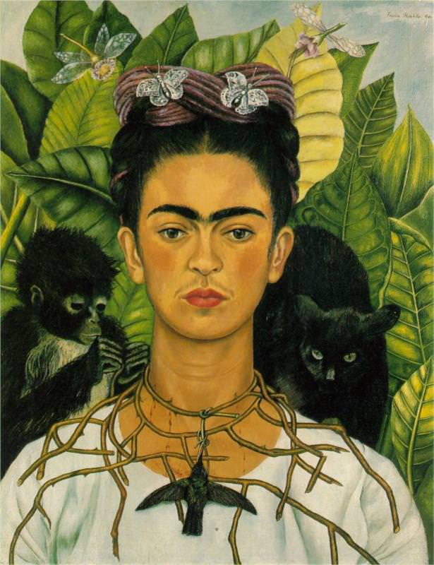
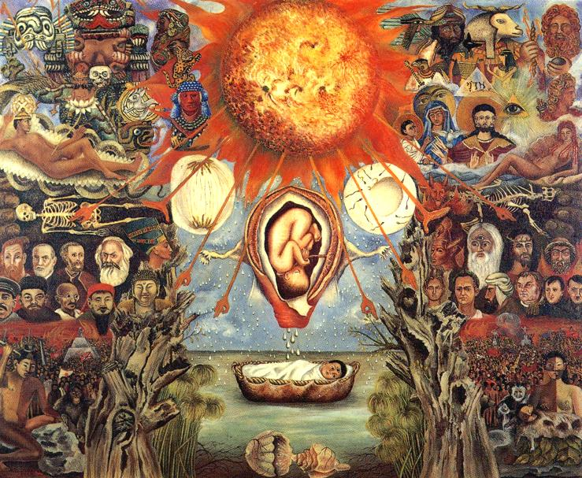
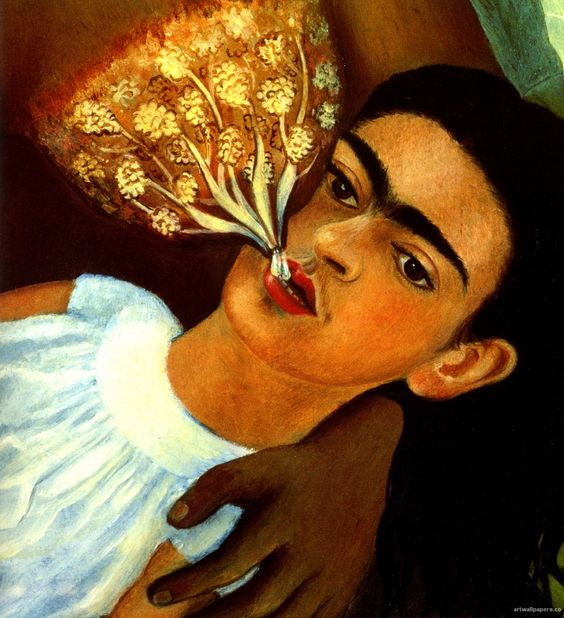
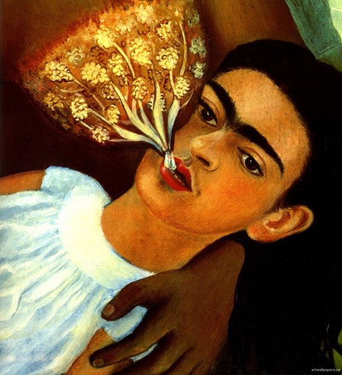

Frida Kahlo




 


One of the greatest painter in 19th century
In 1946, she received the National Prize of
Arts and Sciences, which was conferred upon
her by the Ministry of Public Education.
Her self-portrait 'Self Portrait with Thorn Necklace
and Hummingbird’ is one of her seminal
works.
Her painting, ‘The Broken Column’, painted right after
she had spine surgery, is one of her
most important works.
This painting is symbolic of her physical and psychological
struggles throughout her life.
Best known for her self-portraits.